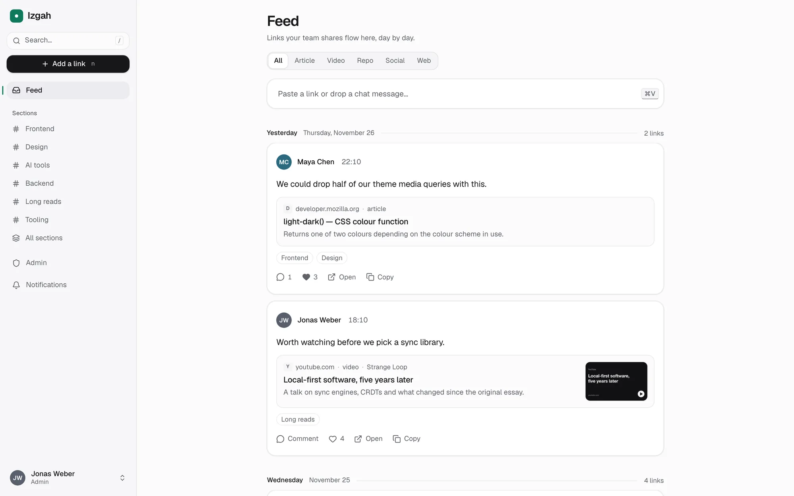
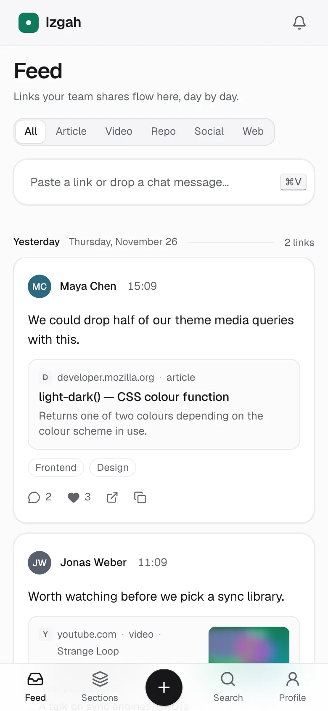
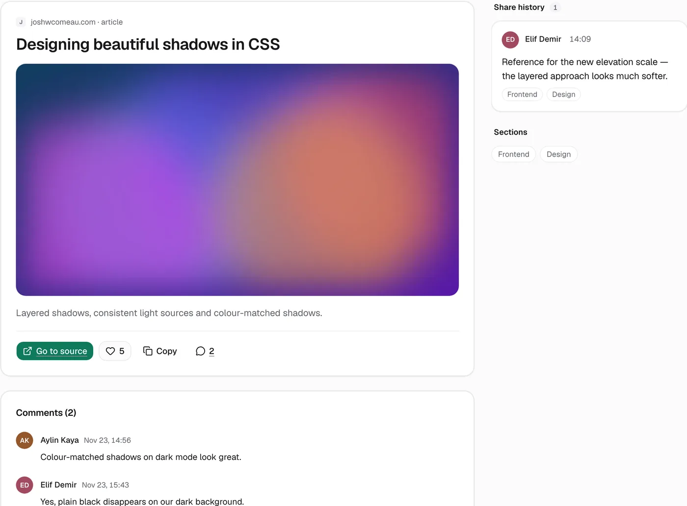
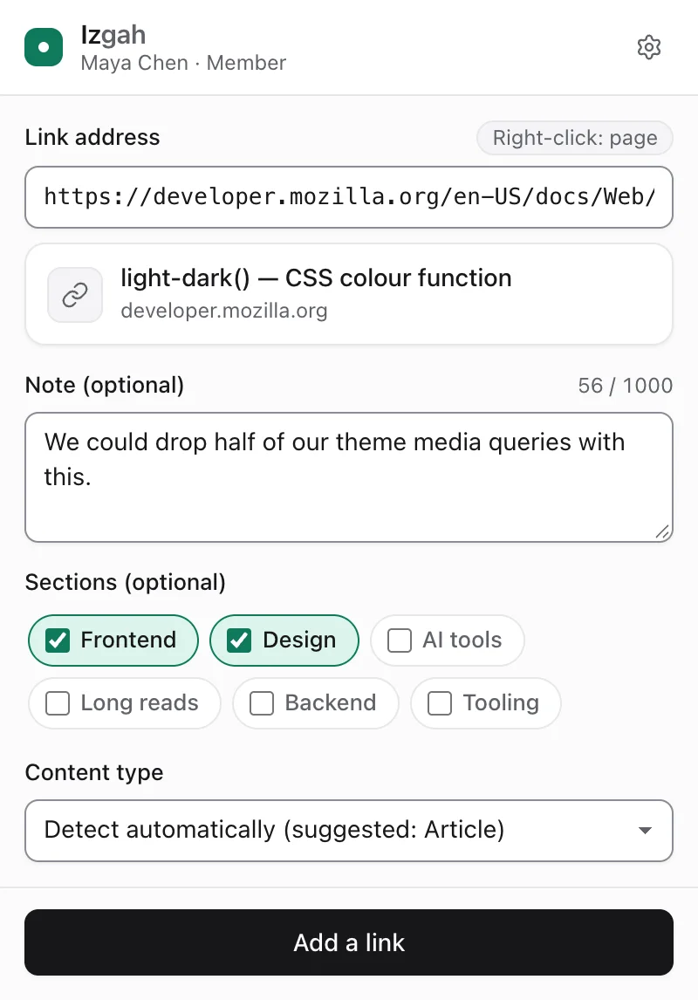
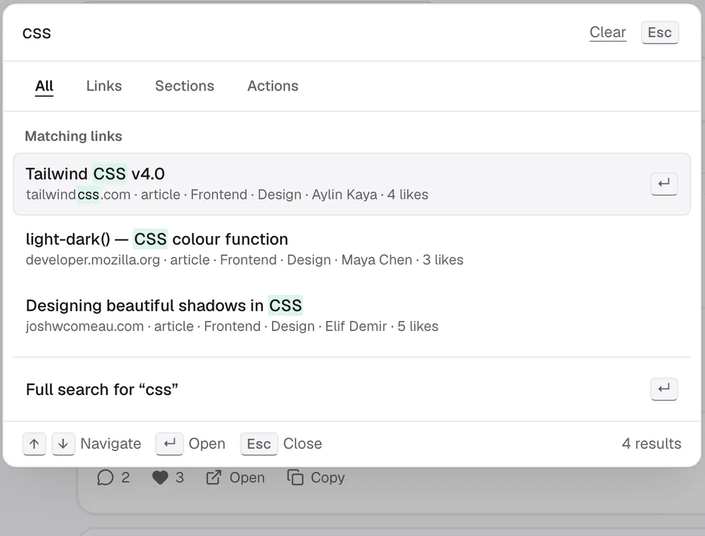

Open source Self-hosted · AGPL-3.0
Your team keeps finding good links. Izgah keeps them findable.
A small feed on your own server where a team shares the links it finds, each with a note, filed in sections, with one discussion per link.


What it does
A shared memory for the links your team passes around
It started as a WhatsApp group. Good links scrolled away within a day, the same video was shared three times with three separate discussions, and nobody could find "that article about…" a month later.
-
One link, one conversation
Links are matched by their canonical address. A second share joins the discussion that already exists, and the page keeps every share beside it.

-
Sections, and links that stay out of the feed
Admins keep the sections. A link can sit in several, and reference links can be filed without showing up in the feed.
-
Browser extensions
Chrome, Firefox and Safari. Alt+Shift+I shares the current tab; the extension talks only to your server.

-
Search in English and Turkish
Titles, notes, page text and URL fragments. ⌘K from anywhere, and j k through the feed.

-
Smart capture, off by default
Type
#sectionin a note and get suggestions from how your team files things. If an admin adds a key, short summaries and AI section suggestions too. -
Calm and accessible
Light and dark themes with high-contrast palettes that meet WCAG 2.2 AA, and a setting that turns motion down.
-
On every screen
Each member picks English or Turkish. On phones, a tab bar takes the sidebar's place.
Self-host
Run it on your server
- Start it with DockerOn any server, behind your reverse proxy.
- Create the first adminThe command prints a one-time invite link; open it and set a password.
- Invite your teamIzgah sends no e-mail: invites are links an admin passes on.
Step-by-step guides for Docker Compose and Caddy and Dokploy.
# on a server with Docker, behind your reverse proxy
git clone https://github.com/gorkemio/izgah && cd izgah
export POSTGRES_PASSWORD='…' BETTER_AUTH_SECRET="$(openssl rand -hex 32)" ORIGIN='https://links.example.com'
docker compose -f docker-compose.prod.yml up -d --build
docker compose -f docker-compose.prod.yml exec app node build/cli.js create-admin --email you@example.com --name YouPrivacy
What runs on your server, and what leaves it
- Runs
- One Node.js container, PostgreSQL, and a folder of WebP images.
- Leaves
- Requests to the pages your team shares, to read titles, icons and preview images; GitHub's API for repository details. If an admin turns on AI: the link's title, description, a text excerpt and your section names, to the provider you chose.
- Never
- Analytics, telemetry or mail to us. There is no "us": izgah.com hosts no instances.
What it doesn't do
Izgah is not a personal bookmark manager. It doesn't archive whole pages, highlight text or keep private folders. If that is what you need, Karakeep and Linkwarden are good self-hosted choices.
What comes next
- Importing a chat export
- Read later
- Export and RSS
- Sharing from phones
The whole roadmap is a document in the repository.
Give your team's links a home
Free software under the GNU AGPL-3.0. Your server, your domain, your data.